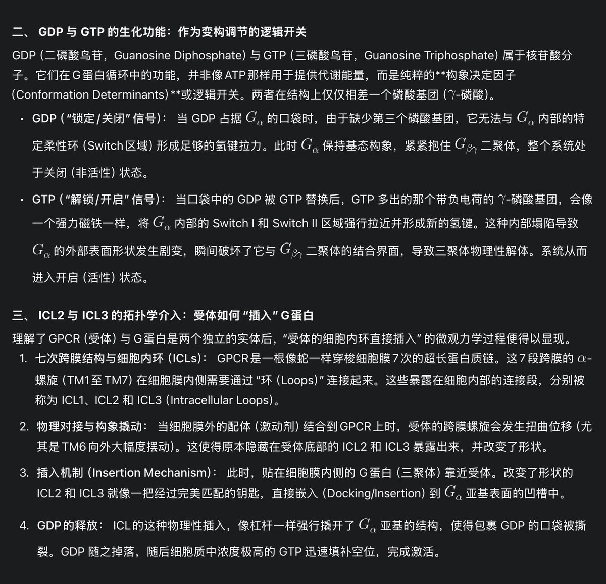

所以似乎可以这样理解：MOR作为GPCR被阿片激活后，产生了构象的变化，于是内部能结合G蛋白的位置露了出来，然后和能与其结合的G蛋白结合，激动它，通过用GTP取代GDP，G蛋白原本的三聚体被打破进入活动态开始发挥抑制/兴奋的效果，而通常MOR会招募抑制性的Gi/o，使得cAMP浓度下降，产生镇痛的抑制效果


这个真的好性感……仅仅是一个磷酸基团的变化，就能造成如此庞大而必然的连锁反应，仅仅是这样微小的变化，这样一个开关被按了下去，事情就发生了，此后的所有改变都遵循着这绝对的规则，恰到好处，没有丝毫冗余，像骨牌一个推动着另一个，一个刚好能嵌入另一个之中，完完全全的必然性，精确而绝对的美 https://t.co/qdA8xbBGFe